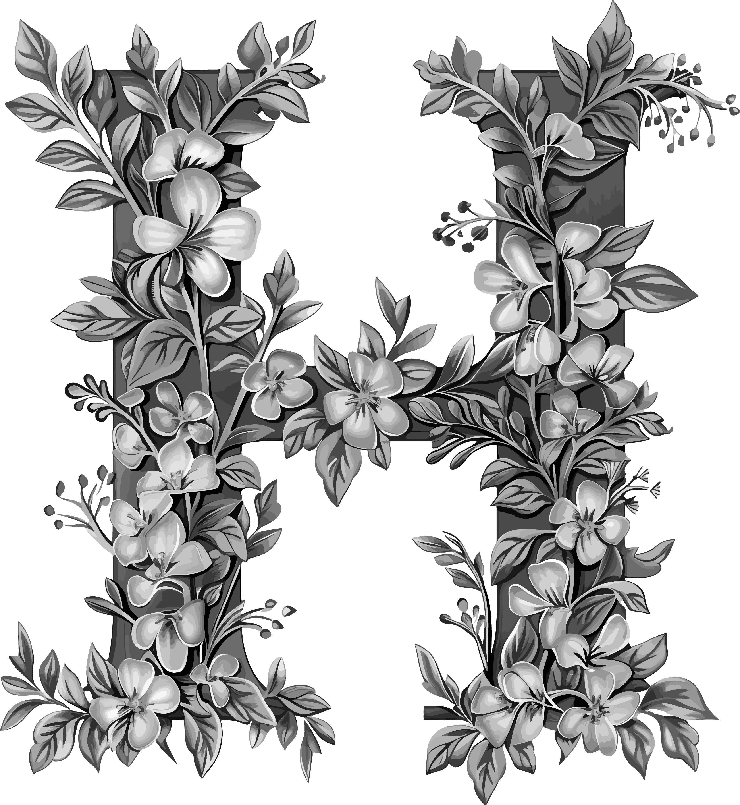
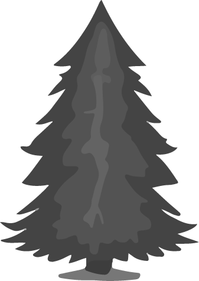

Encontrarás todo lo necesario para desconectar
Pista Finlandesa
Encontrarás todo lo necesario para desconectar
Encontrarás todo lo necesario para desconectar
Pista Finlandesa
Encontrarás todo lo necesario para desconectar
Conocida como "paseo de Valdeflora"
 LA PISTA FINLANDESA
La pista finlandesa de Oviedo se hizo en 1987 y tuvo un coste de 22
millones de pesetas.
Existían dos infraestructuras de trascendencia para la capital: la traída de aguas
de Fitoria y un tren minero.
Las obras de la traída de aguas se desarrollaron entre 1568 y 1600.
El
tren minero se inauguró en 1880.

Durante la década de 1870 se planificó la construcción de un ferrocarril en la loma sureste del monte, motivo de preocupación de autoridades y ciudadanos ya que se temía que pudiese afectar a la traída de aguas desde Fitoria hasta el acueducto de los Pilares, que en esa época suponía el principal abastecimiento hídrico de la ciudad.
En el año 1880 se inaugura el ferrocarril minero del Naranco con una longitud de 7,5 km y un ancho de vía de 0,6 metros. Fue construido por Fábrica de Mieres, una de las empresas pioneras de la minería asturiana, para la extracción de mineral de hierro en Villapérez
Por su trazado atravesaremos puntos de interés como la Fuente de San Esteban, fuente de Consante, la Fuente de Supu (que data del año 1500)y fue restaurada en 1990 por la Escuela Taller Vetusta, o las poblaciones de Arnedo y Fitoria .
En el siglo XVI se construyó el acueducto de los Pilares para abastecer agua desde Fitoria a Oviedo, empleándose parte del trazado actual de la Pista Finlandesa, y se mantuvo activo hasta 1864 cuando fue sustituido por un sistema de depósitos de agua y tuberías a presión.En el año 2013 concluye la obra del colector Norte de Oviedo el cual nace desde la propia Pista Finlandesa para acompañarla en paralelo por su parte inferior y continuar después hasta el río Nora.


Comienza en la Calle Pedro Caravia, perpendicular a la Avenida de los Monumentos, justo sobre el Colegio Público Parque Infantil y continua hasta terminar en la parroquia de Fitoria.
36 Puntos de luz alimentados por paneles solares , desde la calle Pedro Caravia hasta el primer núcleo de viviendas de la vía.

"Paseo de Valdeflora.
 Parque "Pista Finlandesa"
Parque "Pista Finlandesa"
Este recorrido de aproximádamente 5,4 Kilometros (ida y vuelta)
ofrece un entorno natural privilegiado, rodeado de flora y fauna autóctonas.
En él podrás encontrar | Naturaleza | Deporte | Historia.
Renacer Natural
Ecos de Vida en la Pista Finlandesa
Un Espectáculo Natural.
 El Despertar de la Flora en la Pista Finlandesa
El Despertar de la Flora en la Pista Finlandesa
Se encuentra rodeada de árboles como de diversas especies animales autóctonas.
Entre los árboles más destacados veremos fresnos, chopos, robles, hayas, abedules, espinos,
castaños, laureles.
Es frecuente la presencia de tojos, zarzas a ambos lados del camino
"Monte altu" 100 % a tu aire.
 Desconectar y Relajación.
Es un parque que nos permite desconectar, descansar, relajarse, despedirse del estrés y
disfrutar de
las actividades al aire libre.
Dispone de sendas para pasear, merendero, zonas verdes y disfrutar de diferentes especies
botánicas
como: Eucaliptos, Cedros, Piceas, Pinos, Abedules, Cerezos, Avellanos, Castaños, Robles, etc.
Es el lugar favorito de los Ovetenses para celebrar sus fiestas en familia y amigos, como el
Martes
de Campo y San Mateo.

Pista Finlandesa
Para respirar aire puro
Pista Finlandesa
Plantación de árboles frutales

Pista Finlandesa
Un lugar idóneo para una tarde de deporte

Pista Finlandesa
Vistas al hospital de la ciudad
Pista Finlandesa
Árboles frutales

Cubo de basura inteligente
Pista Filandesa
El consistorio local ha intado varias papeleras inteligentes que compactan la basura y una de
ellas
ha sido en la "Pista Filandesa".
Las nueva papelera tienen capacidad de 125 litros de residuos compactados (550l no compactados),
son
alimentadas por energía solar y disponen de localización por
GPS
y un sistema de software que comunica en tiempo real el nivel de llenado. Los operarios de la
limpieza ya saben cuando es el momento de su limpieza y vaciado.

Explora y Disfruta
 Rutas y Actividades en la Pista Finlandesa
Rutas y Actividades en la Pista Finlandesa
Este parque es muy
popular para diversas actividades deportivas y
recreativas .
1-Running y Jogging.
2-Ciclismo (Montaña y Recreativo).
3-Senderismo y Caminatas.
4-Ejercicio al Aire Libre (Entrenamiento, Yoga y Meditación).
5-Actividades Familiares (Paseos en Familia y Juegos).
6-Eventos Deportivos (Carreras y Maratones).
La pista más grande de la ciudad de Oviedo.
 Pista Finlandesa
Pista Finlandesa
La pista Finlandesa, es un espacio por el que se puede pasear y
que, al mismo tiempo, nos ofrece a lo largo del recorrido puntos habilitados para realizar diversos
ejercicios físicos.
En él podrás encontrar | Senderismo | Gimnasio al aire libre |
Un lugar ideal para caminar al aire libre.


Una pista ideal para practicar deporte.
Deporte en la Pista Finlandesa
La pista Finlandesa de Oviedo tiene un recorrido llano y muy cómodo de realizar. A lo largo de su recorrido uno se siente en plena naturaleza, y lo mismo se puede encontrar con caballos, que con las famosas vacas asturianas. Numerosas opciones pensadas para disfrutar Oviedo de una manera que quizá no se os había ocurrido: Oviedo al aire libre


Por lo general, se considera una
ruta moderada, que se tarda una media de 1 h 14 min en recorrer. Esta ruta
es popular para correr y pasear, sin embargo, podrás disfrutar de algo de paz durante los
momentos más tranquilos del día.


La ruta principal de la Pista
Finlandesa es un recorrido lineal de 2,7 km (5,4 km ida y vuelta) que comienza en la Calle
Pedro Caravia y termina en Fitoria. Es un trayecto llano y fácil, ideal para ciclistas de
todos los niveles.


Este gimnasio es un espacio
diseñado para que los usuarios puedan realizar ejercicios físicos en un entorno natural.
Este gimnasio cuenta con varios aparatos y estaciones de ejercicio que permiten trabajar
diferentes grupos musculares.
¿TE GUSTA SALIR A CAMINAR?
Caminar al aire libre no solo mejora tu salud cardiovascular y fortalece tus músculos, sino que también reduce el estrés, aumenta la creatividad, y mejora tu estado de ánimo al conectarte con la naturaleza.
Explora y Disfruta
 Otras actividades a realizar en la Pista Finlandesa.
Otras actividades a realizar en la Pista Finlandesa.
Esta pista ofrece
otras actividades con las que se puede disfrutar de la naturaleza:
1-Observación de fauna y flora.
2-Yoga y meditación.
3-Fotografía.
Sobre Nosotros
Somos un equipo apasionado de desarrolladores y diseñadores dedicados a crear experiencias
web
únicas.
Nuestra misión es transformar la experiencia de visitar los parques por
excelencia
de oviedo
en realidades digitales que sean visualmente atractivas, intuitivas y fáciles de ver.
© 2024 Parque Purificación Tomas. Todos lo derechos reservados